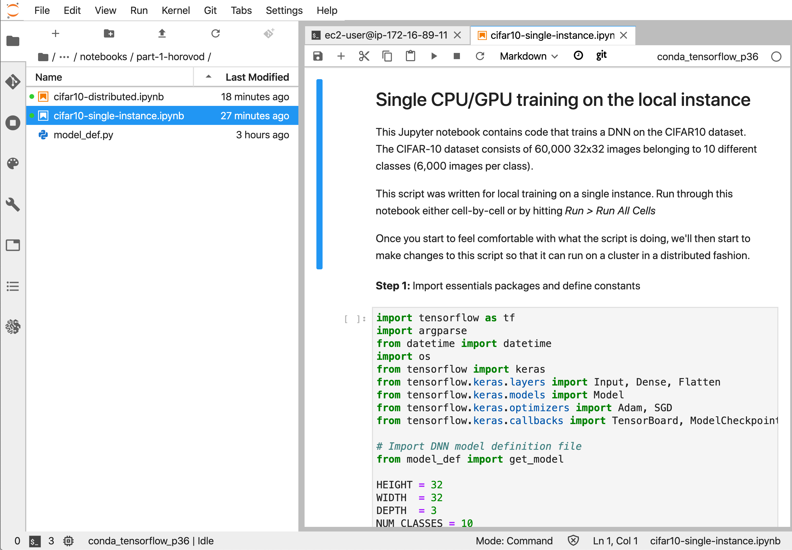

In this section you’ll get familiar with the training script we’ll be converting for distributed training in the next notebook.
Open cifar10-single-instance.ipynb and run through the cells. The following notebook is located at:
sagemaker-workshop-202006 > labs > 01. Training > 01. Distributed Training > part-1-horovod

Stop: Do this section on JupyterLab. Below is a copy of the jupyter notebook for reference.
cifar10-single-instance.ipynbThis Jupyter notebook contains code that trains a DNN on the CIFAR10 dataset. The script was written for local training on a single instance. Run through this notebook either cell-by-cell or by hitting Run > Run All Cells
Once you start to feel comfortable with what the script is doing, we’ll then start to make changes to this script so that it can run on a cluster in a distributed fashion.
Step 1: Import essentials packages and define constants
import tensorflow as tf
import argparse
from datetime import datetime
import os
from tensorflow import keras
from tensorflow.keras.layers import Input, Dense, Flatten
from tensorflow.keras.models import Model
from tensorflow.keras.optimizers import Adam, SGD
from tensorflow.keras.callbacks import TensorBoard, ModelCheckpoint
# Import DNN model definition file
from model_def import get_model
HEIGHT = 32
WIDTH = 32
DEPTH = 3
NUM_CLASSES = 10
NUM_TRAIN_IMAGES = 40000
NUM_VALID_IMAGES = 10000
NUM_TEST_IMAGES = 10000Step 2: Define functions used to load and prepare dataset for training. We incorporate 3 types of data augmentation schemes: random resize, random crop, random flip. Feel free to update this if you’re comfortable. Leave the cell as it is if you aren’t comfortable making changes.
def train_preprocess_fn(image):
# Resize the image to add four extra pixels on each side.
image = tf.image.resize_image_with_crop_or_pad(image, HEIGHT + 8, WIDTH + 8)
# Randomly crop a [HEIGHT, WIDTH] section of the image.
image = tf.random_crop(image, [HEIGHT, WIDTH, DEPTH])
# Randomly flip the image horizontally.
image = tf.image.random_flip_left_right(image)
return image
def make_batch(filenames, batch_size):
"""Read the images and labels from 'filenames'."""
# Repeat infinitely.
dataset = tf.data.TFRecordDataset(filenames).repeat()
# Parse records.
dataset = dataset.map(single_example_parser, num_parallel_calls=1)
# Batch it up.
dataset = dataset.batch(batch_size, drop_remainder=True)
iterator = dataset.make_one_shot_iterator()
image_batch, label_batch = iterator.get_next()
return image_batch, label_batch
def single_example_parser(serialized_example):
"""Parses a single tf.Example into image and label tensors."""
# Dimensions of the images in the CIFAR-10 dataset.
# See http://www.cs.toronto.edu/~kriz/cifar.html for a description of the
# input format.
features = tf.parse_single_example(
serialized_example,
features={
'image': tf.FixedLenFeature([], tf.string),
'label': tf.FixedLenFeature([], tf.int64),
})
image = tf.decode_raw(features['image'], tf.uint8)
image.set_shape([DEPTH * HEIGHT * WIDTH])
# Reshape from [depth * height * width] to [depth, height, width].
image = tf.cast(
tf.transpose(tf.reshape(image, [DEPTH, HEIGHT, WIDTH]), [1, 2, 0]),
tf.float32)
label = tf.cast(features['label'], tf.int32)
image = train_preprocess_fn(image)
label = tf.one_hot(label, NUM_CLASSES)
return image, labelStep 3: * Define hyperameters, directories for train, validation and test. * Load model from model_def.py * Compile model and fit
# Hyper-parameters
epochs = 1
lr = 0.01
batch_size = 128
momentum = 0.9
weight_decay = 2e-4
optimizer = 'sgd'
gpu_count = 1
# Data directories and other options
checkpoint_dir = '../ckpt_dir'
if not os.path.exists(checkpoint_dir):
os.makedirs(checkpoint_dir)
train_dir = '../dataset/train'
validation_dir = '../dataset/validation'
eval_dir = '../dataset/eval'
train_dataset = make_batch(train_dir+'/train.tfrecords', batch_size)
val_dataset = make_batch(validation_dir+'/validation.tfrecords', batch_size)
eval_dataset = make_batch(eval_dir+'/eval.tfrecords', batch_size)model = get_model(lr, weight_decay, optimizer, momentum)
opt = SGD(lr=lr, decay=weight_decay, momentum=momentum)model.compile(loss='categorical_crossentropy',
optimizer=opt,
metrics=['accuracy'])# Compile model
model.compile(optimizer=SGD(lr=lr, decay=weight_decay, momentum=momentum),
loss='categorical_crossentropy',
metrics=['accuracy'])%%time
# Train model
history = model.fit(x=train_dataset[0], y=train_dataset[1],
steps_per_epoch=NUM_TRAIN_IMAGES // batch_size,
validation_data=val_dataset,
validation_steps=NUM_VALID_IMAGES // batch_size,
epochs=epochs,
callbacks=[ModelCheckpoint(checkpoint_dir + '/checkpoint-{epoch}.h5')])# Evaluate model performance
score = model.evaluate(eval_dataset[0],
eval_dataset[1],
steps=NUM_TEST_IMAGES // batch_size,
verbose=0)
print('Test loss :', score[0])
print('Test accuracy:', score[1])cifar10-distributed.ipynb and start converting it for distributed training